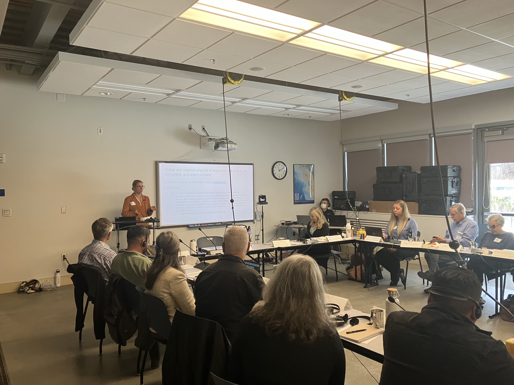

Very broadly, my research spans marine and terrestrial systems and asks how people and wildlife can better coexist. I aim to both advance scientific knowledge around patterns of wildlife exposure to anthropogenic threats, including better understanding how animal behavior mediates threat exposure and how these threats impact wildlife population dynamics, as well as use this science to improve conservation and management. Below, I’ve selected some example publications and projects that illustrate the key themes of my research.
Spatial mapping of species distributions and threats
I modeled patterns of global ship-strike risk for blue, fin, humpback, and sperm whales (Nisi et al. 2024, Science), which revealed novel hotspots of ship-strike risk for these species as well as the low levels of protection currently in place. This work constituted the first global-scale characterization of whale-ship collision risk, filling a critical knowledge gap for expanding mitigation measures.
From Nisi et al. 2024. Spatial overlap between whales and shipping traffic. I modeled how living in more developed areas influences puma mortality rates (Nisi et al. 2023, Ecological Applications), finding that exposure to human development is associated with reduced survival which scales up to produce source-sink dynamics across the region.
I characterized patterns of human-caused mortality for pumas in a human-dominated landscape (Nisi et al. 2022, Oikos), finding a mismatch between areas that pumas perceive as risky with where they are at the highest risk of being killed.
From Nisi et al. 2022. Panel A shows the risk of retaliatory killings (i.e., when a puma is killed by a person following its consumption of a domestic goat). Panel B shows puma habitat selection. Panel C shows areas that are both selected by pumas and where their risk of being killed by people is high - indicating a mismatch between behavior and threat exposure.
Quantitative methods in conservation ecology
- For my global analysis of whale-ship collision risk, I worked with >435,000 whale locations to build integrated species distribution models (iSDMs) incorporating survey, sightings, and tagging data into Bayesian hierarchical models fit with INLA. I also worked with Automatic Identification Systems (AIS) data to map global shipping traffic. Code and data for this project are archived on Zenodo and also available on my Github.

- I investigated how temporal scale (i.e., the rate at which GPS locations are recorded) influences inference from habitat selection analyses (Nisi et al. 2022, Journal of Animal Ecology), finding that different drivers of habitat selection emerge more strongly at finer versus coarser scales.
I integrated population modeling and habitat selection analyses for pumas in the Santa Cruz Mountains (Nisi et al. 2023, Ecological Applications), to evaluate which habitat selection metric is the strongest proxy for puma population growth rate in this region.
I leveraged human mobility data alongside puma movement data to characterize how puma habitat selection patterns changed during COVID shelter-in-place orders (Wilmers et al. 2021, Current Biology), finding that pumas shifted closer to the urban edge during shelter-in-place periods when people were less mobile.
From Wilmers et al. 2021. Panel A shows patterns of human mobility across the shelter-in-place order (SIPO), panel B shows puma habitat selection before and after SIPO, and panels C-E show puma locations during each period.
Integrating science with conservation and management
- I am collaborating with Protecting Blue Whales and Blue Skies, a program that calculates cooperation rates and environmental benefits associated with shipping company participation in NOAA’s voluntary vessel speed reduction zones in several National Marine Sanctuaries along the California coastline. In this work I calculate ship-strike risk reduction benefits associated with vessel slow-downs and am also developing down-scaled habitat suitability models for blue, fin, humpback, and gray whales to inform potential program expansion.

- I am working with PaC-Whale (Northeast Pacific Collaborative to Reduce Vessel Impacts on Whales), a collective effort across marine protected area managers from Canada to Costa Rica, to inform expanded protections for endangered whales in the eastern Pacific Basin across their entire migratory range.